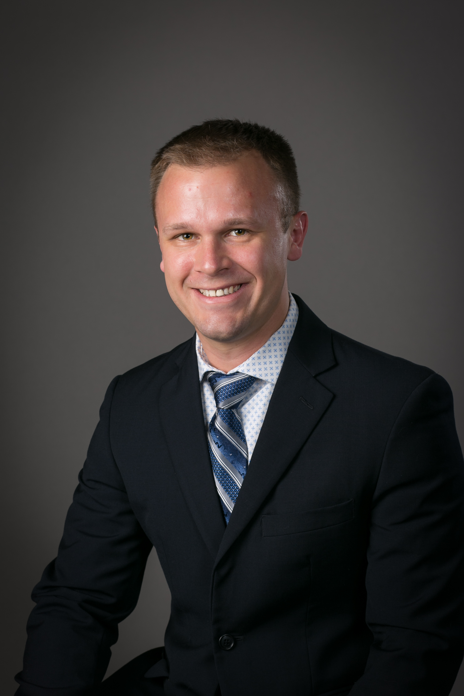

Welcome to my professional portfolio! |
|
|

|
Active research integrates geology, geography, and geomorphology with remote sensing, GIS, and geophysics through machine learning and AI. My main research focus is: working toward developing more comprehensive and objective models of predicting coastal evolution, with a particular emphasis on coastal cliffs and bluffs. Some additional research areas of interest are: developing new machine learning techinques for coastal research, engaging stakeholders in citizen science research, utilizing new geophysical techniques for geologic and hydrologic exploration, developing new analytical techniques for quantifying and propagating error in a range of research domains, and working with students on a wide variety of projects and locations. A secondary research interest of mine is geoeducation, specifically focusing on experiential learning (e.g. undergraduate research, study abroad, internships), mentoring, and general pedagogy to improve teaching and learning. I firmly believe that teaching and research are not exclusive and they should be brought together in the classroom and beyond. By engaging active research and discovery into the classroom, we can better prepare students for future careers and gain valuable fresh perspectives on current/future research projects. Navigation links are located along the top of the page. I invite you to examine some examples of past and present works. If you have any questions, suggestions, or comments please let me know using the "Contact Me" link at the bottom of the page. |